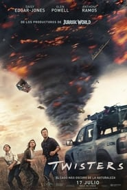

Tornados (2024)

Duración: 2h 2m
Formato: MP4
Resolución: Full HD
Audio: Latino e idioma original
Aventura / Acción / Drama / Suspenso
Kate Carter, una ex cazadora de tormentas perseguida por un devastador encuentro con un tornado durante, es llamada por su amigo Javi de regreso a las llanuras abiertas para probar un nuevo e innovador sistema de seguimiento. Allí, se cruza con la encantadora e imprudente superestrella de las redes sociales Tyler Owens y su estridente equipo. A medida que la temporada de tormentas se intensifica, se desatarán fenómenos aterradores nunca antes vistos, y Kate, Tyler y sus equipos competidores se encuentran de lleno en el camino de múltiples sistemas de tormentas que convergen sobre el centro de Oklahoma en la lucha de sus vidas.